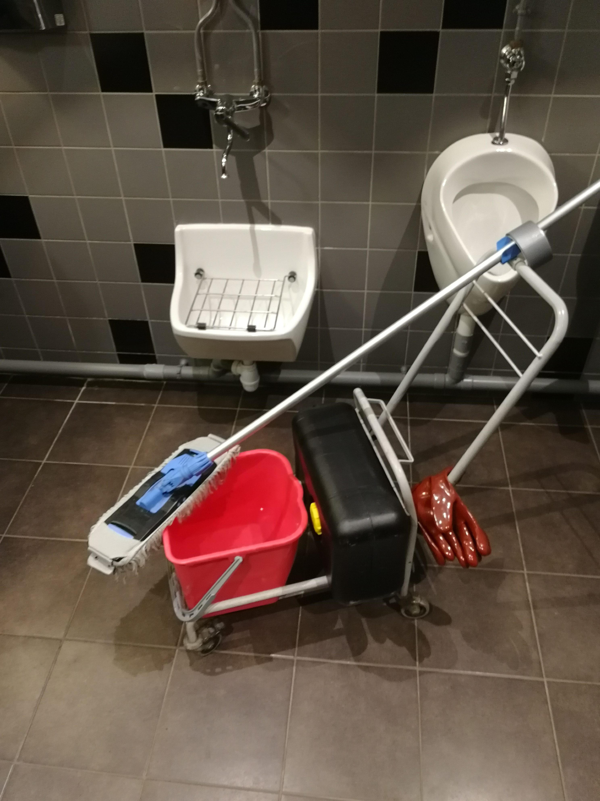
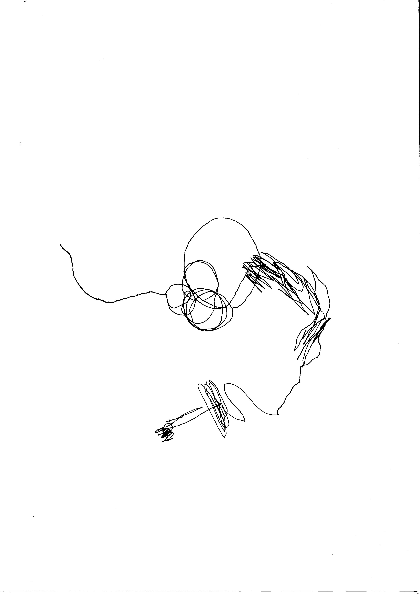
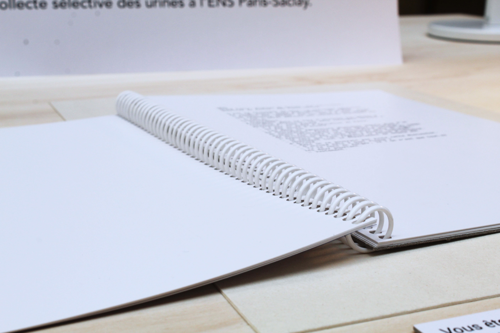
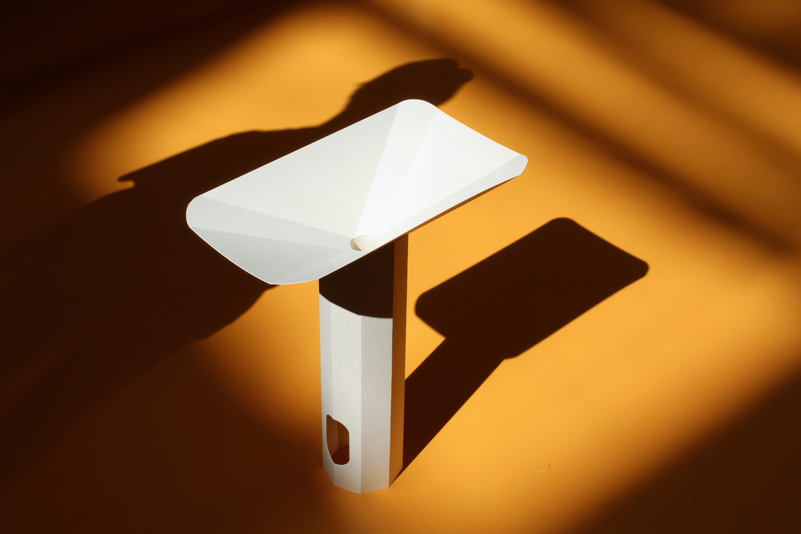
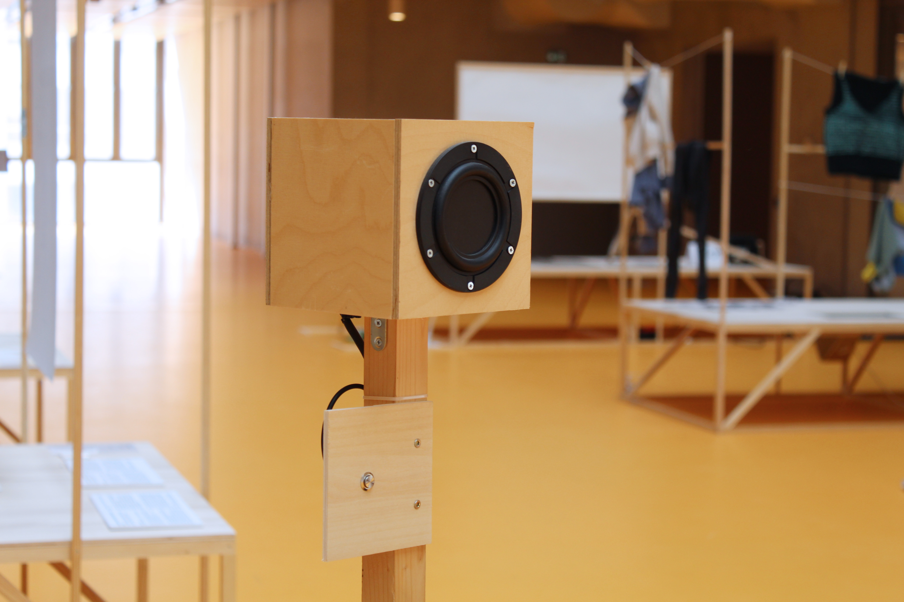
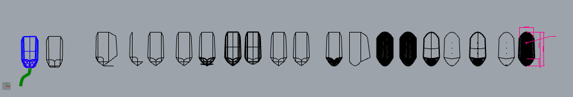
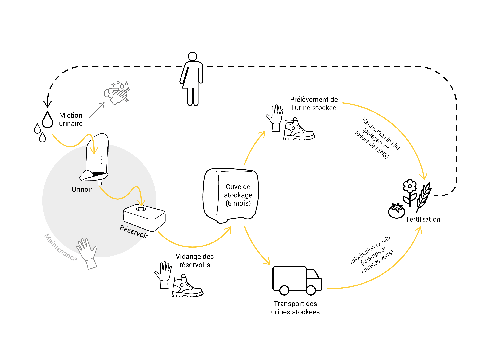
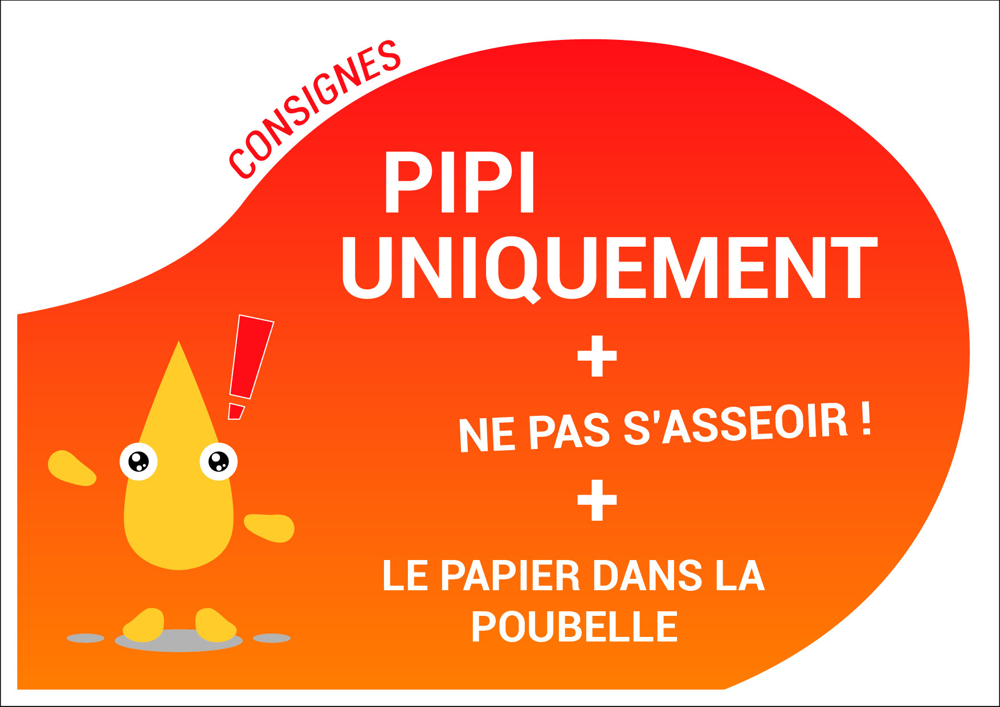

Urocyclus
Arriving in the new buildings of the École normale supérieure Paris-Saclay in 2020, I realize that only conventional toilets were implemented, while other ecological issues were tackled (ventillation...). My surprise was enhanced by the fact that landfields were litteraly at a few meters from the school: why no circularity in-between the two was proposed?
Indeed, the agricultural recycling of human urine could be a answer to contemporary environmental challenges, such as ecosystem pollution and the waste of energy and resources. However, its implementation poses problems, particularly from a social perspective, as it relates to a daily and embodied practice: urinating in the toilet. This is what I studied for my doctoral research.
The Urocyclus project, for its part, comes from my experience of the field. I first wrote short texts to speculate about other possibilities for the management of urine at the school. Based on that, I designed a system to collect and recycle the urine. The whole was presented for a collective exhibition in June 2021.
Enventually, as I was starting my PhD, and thanks to the opportunity of development given by the ENS Paris-Saclay, Urocyclus became a research project that aims to design and experiment a device for collecting human urine (for its recycling) and to carry fieldwork with users and stakeholders. It aims to study the changes in perception and representation in relation with this new device and system, shifting the sociocultural existing order (coined in my PhD).The urine collection device Urocyclus consists of a gender-neutral, rolled, folded, and welded stainless steel dry urinal attached to an OSB box connected to a reservoir container. It was implemented temporaly in two cubicles in March 2023 for testing and fieldwork at the Tanneurs site of the University of Tours.
The 1:1 scale two prototypes were produced with the support of the MSH Val de Loire and CITERES laboratory.














